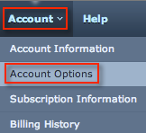
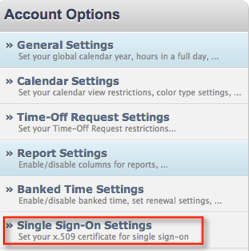

Sign in to TimeOffManager. In the top menu, select Account, and then select Account Options, as shown below.

In the left side menu that opens, select Single Sign-On Settings, as shown below.

Copy and paste the following data into the x.509 Certificate field, as shown below. Be sure to copy the Begin Certificate and End Certificate lines.
Sign into the Okta Admin dashboard to generate this value.
Copy the following link into the IdP Issuer field, as shown below.
Sign into the Okta Admin dashboard to generate this value.Copy the following link to Idp Endpoint URL, as shown below.
Sign into the Okta Admin dashboard to generate this value.Copy the following link to the Logout URL field, as shown below.
Sign into the Okta Admin dashboard to generate this value.